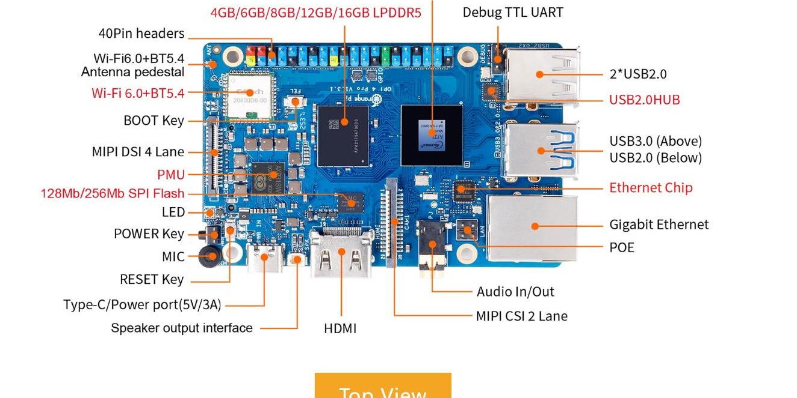
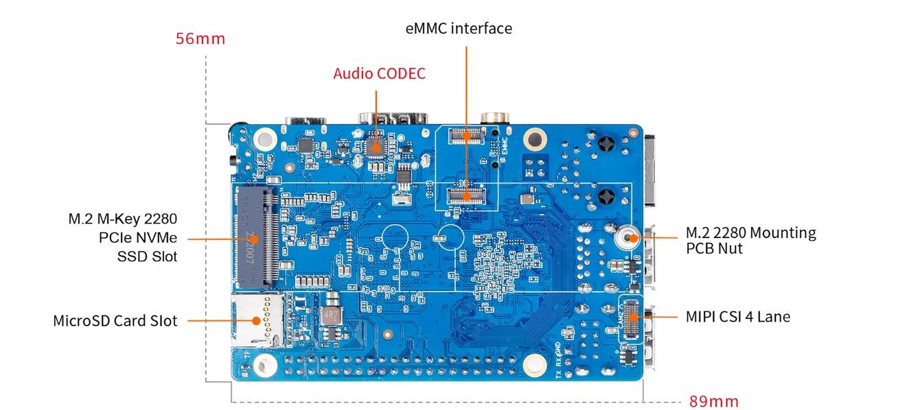
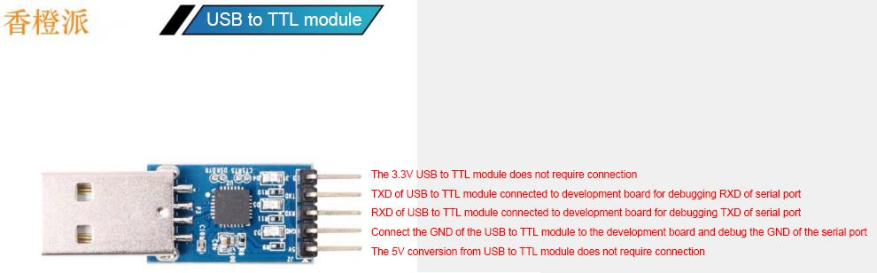
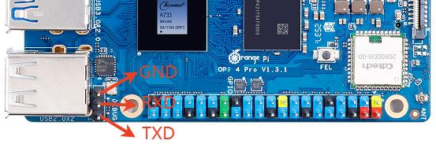
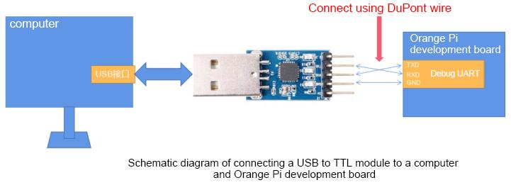

Fiche à imprimer · établie le 02/10/2026 à partir du manuel « OrangePi 4 Pro A733 User Manual v1.4 » (photos tirées du manuel) · dimotic-ha
Quand on a installé le système sur le SSD NVMe avec sudo nand-sata-install → option « 4 Boot from SPI – system on SATA, USB or NVMe », le script écrit un chargeur de démarrage (bootloader) dans la mémoire SPI Flash soudée sur la carte. Ensuite la carte démarre depuis la SPI Flash, qui lance le système du SSD : une carte SD insérée n'est plus prise en compte (ou le démarrage reste bloqué si le SSD a un souci).
Pour que la carte reprenne la carte SD, il faut effacer (ou neutraliser) le bootloader de la SPI Flash. Le manuel ne décrit pas cette remise à zéro : les méthodes ci-dessous sont les méthodes habituelles sur les cartes Allwinner ; les commandes marquées (à vérifier) n'ont pas encore été essayées sur cette carte.

Vue de dessus (manuel, § 1.6). Repères utiles : BOOT Key (sérigraphié « FEL »), RESET Key, POWER Key, 128Mb/256Mb SPI Flash, Debug TTL UART (3 broches marquées « DEBUG », entre le connecteur 40 broches et les 2 ports USB 2.0), alimentation Type-C 5 V / 3 A.

Vue de dessous : MicroSD Card Slot (lecteur de carte SD), emplacement M.2 du SSD NVMe.
| Élément | Détail |
|---|---|
| Carte microSD (8 Go mini, classe 10) avec une image Orange Pi 4 Pro gravée | Par ex. Orangepi4pro_1.0.6_debian_bookworm…img (dans ~/Téléchargements), gravée avec balenaEtcher. |
| Module USB ↔ série TTL 3,3 V (« clé USB-TTL ») | Oui, le même type que pour flasher un ESP32 « nu » : module à puce CH340, CP2102 ou FT232. Il doit fonctionner en 3,3 V (cavalier ou interrupteur sur 3,3 V s'il y en a un). ⚠ Une carte de développement ESP32 avec son USB intégré ne convient pas : il faut le petit module seul, à broches. |
| 3 fils Dupont femelle-femelle | GND, TX, RX. |
| Un PC avec un terminal série | Linux : picocom, minicom ou screen. Windows : MobaXterm ou PuTTY. 115200 bauds, 8 bits, sans parité, 1 bit d'arrêt, sans contrôle de flux. |

Module USB-TTL 3,3 V (manuel § 2.1) : ne brancher que GND, TXD, RXD. Les broches 3,3 V et 5 V ne se branchent pas.

Port « DEBUG » (manuel § 2.10) : de haut en bas GND, RXD, TXD (côté bord de carte).

Les fils TX et RX se croisent.
| Module USB-TTL | → | Orange Pi, port DEBUG |
|---|---|---|
| GND | → | GND |
| RXD | → | TXD |
| TXD | → | RXD |
| 3,3 V / 5 V | rien (la carte reste alimentée par son Type-C) |
Sur le PC Linux : brancher le module, repérer son nom (ls /dev/ttyUSB*, en général /dev/ttyUSB0), puis :
sudo picocom -b 115200 /dev/ttyUSB0 (sortie : Ctrl+A puis Ctrl+X)
Mettre la carte sous tension : les messages de démarrage défilent. Rien ne s'affiche ? Inverser TX et RX (sans danger), vérifier GND et la vitesse 115200.
sudo nand-sata-install (option 4).cat /proc/mtd → une ligne « mtd0: … » doit apparaîtreSi
/proc/mtd est vide, la SPI Flash n'est pas exposée par ce noyau : passer à la méthode B.sudo dd if=/dev/zero of=/dev/mtdblock0 bs=1M count=1 status=progress sync(variante si l'outil est installé :
sudo flash_erase /dev/mtd0 0 0)sudo poweroff, insérer la carte SD, remettre sous tension.=> ou sunxi#). Si on la rate : bouton RESET et recommencer.run mmc_boot ou bootSi le système de la SD démarre, appliquer ensuite la méthode A depuis ce système pour effacer la SPI Flash définitivement.
sf probe 0 sf erase 0 0x100000 reset
Maintenir le bouton BOOT enfoncé pendant la mise sous tension (ou pendant un appui sur RESET), puis le relâcher : le processeur passe en mode de téléchargement USB (FEL) et ne lit plus la SPI Flash. Ce mode sert à reflasher la carte depuis un PC Windows avec l'outil Allwinner PhoenixSuit / LiveSuit par le port USB-C. C'est le dernier recours : il demande l'outil et l'image adaptés, et la procédure exacte pour l'A733 est à vérifier dans la documentation Orange Pi avant de s'y lancer.
La carte SD est insérée, la carte redémarre et le port série affiche le démarrage depuis la carte SD (« mmc0 », « SD card »…).
Une fois connecté : findmnt / indique /dev/mmcblk… (carte SD) et non /dev/nvme0n1p1 (SSD).
Si l'on veut revenir au SSD plus tard : sudo nand-sata-install → option 4 (réécrit le bootloader dans la SPI Flash).